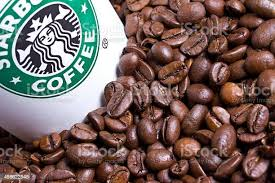

MISSÃO STARBUCKS
Todos os dias esperamos fazer duas coisas:
dividir um ótimo café com nossos amigos e ajudar a tornar o mundo um pouquinho melhor.
Já era assim quando a primeira Starbucks abriu em 1971 e continua sendo assim até hoje.
Nosso café
Sempre acreditamos em servir o melhor café possível.
Nosso objetivo é que todo o nosso café seja cultivado sob os mais altos padrões de qualidade,
usando práticas éticas de fornecimento.
Nossos compradores de café viajam pessoalmente para fazendas de café na América Latina,
África e Ásia para selecionar grãos de alta qualidade.
E os nossos torrefadores principais trazem o equilíbrio e o sabor rico dos grãos através da assinatura Starbucks Roast.
